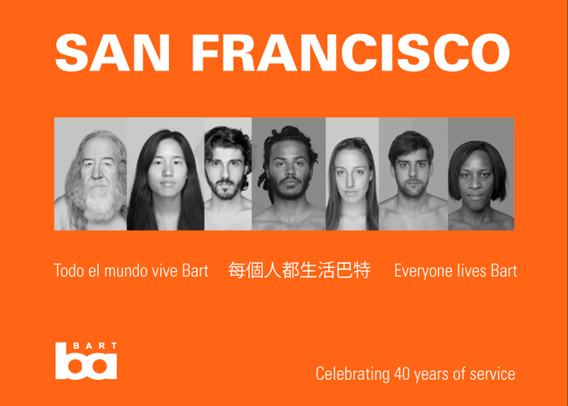
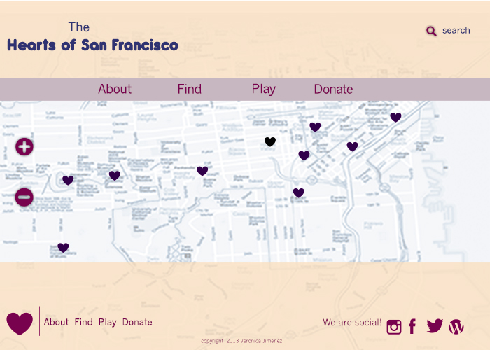

Designare
About

Veronica Jimenez
Design Enthusiast
San Francisco, California
I've always been inspired by visual elements. Growing up taking pictures with my dad in a culture full of color and mysticism like Mexico, is one of the things I've always been thankful for.
When I finished university I decided to travel instead of staying in my hometown and getting a job like most people do.
After travelling for a couple of years, I realized that I wasn't really passionate about business management, and that what I really wanted was to get into graphic design.
“Design is a
powerfull tool
to foster
empathy”
Esteban Ucrós
Last year I started taking graphic design, photoshop, illustrator, indesign and user experience design classes at San Francisco State University. I've also been learning Html, Css and Javascript with General Assembly at the Front End Web Development program.
It's so refreshing for me to learn about the web world and how it works.
I am looking for a place where I can put my new skills to work in real life and, in some time, be able to call myself a web designer.
Work
-
 Logo and landing page desing for restaurant
Logo and landing page desing for restaurant -

Proposition of BART's publicity poster
-

The Hearts of San Francisco Proposal Landing page
-
 Proposal of User Experience Flow for The Hearts of San Francisco
Proposal of User Experience Flow for The Hearts of San Francisco


Connect
© 2013 Veronica Jimenez.